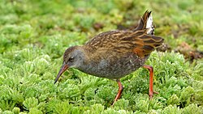
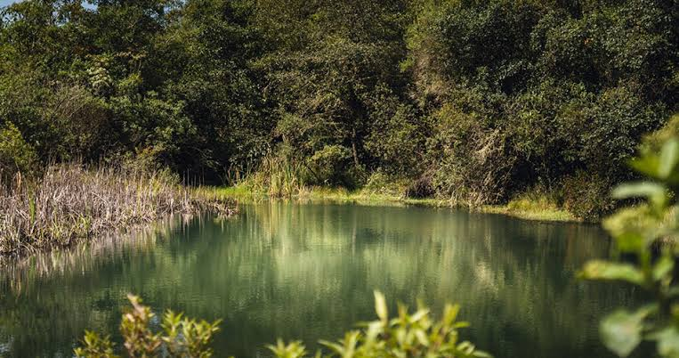
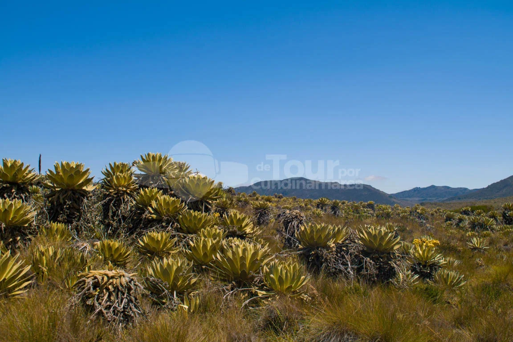

Avistamiento de Aves y Tingua
Reserva de hábitat para aves migratorias y endémicas como la tingua bogotana en el humedal de Fúquene.
Explora las especies de flora y fauna endémicas presentes en la cuenca del lago y las montañas.

Reserva de hábitat para aves migratorias y endémicas como la tingua bogotana en el humedal de Fúquene.

Especies vegetales nativas de la sabana de Bogotá que regulan el ciclo hídrico de la provincia de Ubaté.

Formaciones de musgo y frailejones en las crestas montañosas que delimitan el municipio.